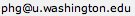

You will need to install both Chromaseq, as well as Phred, Phrap, and Phd2Fasta.
Installing Chromaseq
To install Chromaseq, go to the download page and follow the instructions.
Acquiring Phred and Phrap
You can either acquire Phred and Phrap as source code (see How to Get Phred/Phrap/Consed), which most people at academic institutions can obtain free, or you can purchase precompiled versions from CodonCode Corporation. Note that Chromaseq does not require Consed, and so you will not need to obtain Consed for use with Chromaseq.
Please note that for most newer operating systems (ones that are 64-bit operating systems, e.g., MacOS X 10.6 or later on a Mac purchased in the last few years) the default version of Phrap will fail to run properly. To use Phrap (and thus Chromaseq) on these newer operating systems, you need to get the newest, beta version of Phrap. Here are the details to acquire this, as specified by the author of Phrap:
A beta test version of the package, with many new features and capabilities (including some support for next-generation sequencing data), is now also available. It is not yet the default distribution version because it is still being tested, so you must request it separately, as follows: send an email to , with a Subject: line that says "phrap new version request", and an email body that consists of the following two lines (it should be in exactly this format, to be computer readable): Request: phrap ver 1.080721 or later Your email address should be the same one you supplied in your previous phrap request. Keep the square brackets ('[' and ']') around your email address. |
Compiling Phred, Phd2Fasta, and Phrap
If you are not familiar with compiling source code into executable programs, you may wish to ask for help from a local expert. (Not us.) Basically, you are taking the source code, present as text written in the computer language C, and asking a compiler to convert that text into machine code that your computer can understand. To do this, you will need access to a compiler. Here are some basic instructions, but they cannot be guaranteed to work on all computers.
Note: there is a bug in the current release version of Phrap (version 0.990329) when compiled for 64-bit machines that will cause it to fail when used within the Chromaseq context. Please see the Troubleshooting page if you have problems.
Preparing the source code
You will receive the source code as archives, in three pieces, which might have names like this:
- phred-dist-020425.c-acd.tar.Z
- phd2fasta-acd-dist.tar.Z
- distrib.tar.Z (this contains Phrap)
Unzip/untar these archives, so that you now have three directories on disk, which might have names like this:
- phred-dist-020425.c
- phd2fasta-acd-dist
- distrib
Each of these directories contain the source code for different programs, and you will need to compile each one.
Creating the program directory
You will also need to create a directory to house the finished programs. We will imagine that you have created it and that it is called "phredphrap".
Compiling the programs
Sorry, but we cannot provide help to you in your attempt to compile these programs. For help you will need to be in touch with your local computer guru. If you find any error in the instructions below, please send us an email ( ), and we can update this page.
), and we can update this page.
To compile the programs, following these instructions:
MacOS X, Linux
- If you are on Mac OSX, you will first need to install Xcode, which you can download at http://developer.apple.com/technologies/tools/xcode.html. Install Xcode.
- Start up a UNIX shell. On Mac OSX, you can start the application called Terminal in the Utilities folder in the Applications folder.
- Change the directory to be the phrap source directory (e.g., "cd /phredPhrap Source/distrib/")
- Type "make"; this will cause your C compiler to compile phrap as well as some other programs. Various text will be written to the shell or terminal, and once it stops, there should be a file named named "phrap" in the directory. If you have problems, you might look into the phrap.doc file in the phrap directory for more information about installation.
- Copy phrap to the previously created program directory.
- cd to the phred directory ("cd /phredPhrap Source/phred-dist-020425.c-acd").
- Type "make"; this will cause your C compiler to compile phred. If you have problems, you might look into the INSTALL file in the phred directory for more information.
- Copy phred to the previously created program directory.
- cd to the phd2fasta directory ("cd /phredPhrap Source/phd2fasta-acd-dist).
- Type "make"; this will cause your C compiler to compile phd2fasta. If you have problems, you might look into the INSTALL file in the phd2fasta directory for more information.
- Copy phd2fasta to the previously created program directory.
- You should now have three programs in your program directory: phrap, phred, and phd2fasta.
Windows
- Install cygwin available for free at http://www.cygwin.com -- make sure you download the x86 version, and that you have both the C compiler selected (gcc), as well as make (makefile support).
- Start the cygwin shell.
- In the cygwin shell, change the directory to be the phrap source directory (e.g., "cd /cygdrive/c/phredPhrap Source/distrib/").
- Type "make"; this will cause your C compiler to compile phrap, and create a file named "phrap.exe". If you have problems, you might look into the phrap.doc file in the phrap directory for more information about installation.
- Copy phrap.exe to the previously created program directory (e.g., "cp phrap.exe /cygdrive/c/phredphrap/").
- cd to the phred directory using the cygwin shell ("cd /cygdrive/c/phredPhrap Source/phred-dist-020425.c-acd").
- Type "make"; this will cause your C compiler to compile phred, and create a file named "phred.exe".
- Copy phred.exe to the previously created program directory (e.g., "cp phred.exe /cygdrive/c/phredphrap/").
- cd to the phd2fasta directory using the cygwin shell ("cd /cygdrive/c/phredPhrap Source/phd2fasta-acd-dist).
- Type "make"; this will cause your C compiler to compile phd2fasta, and create a file named "phd2fasta.exe".
- Copy phd2fasta.exe to the previously created program directory (e.g., "cp phd2fasta.exe /cygdrive/c/phredphrap/").
- You should now have three programs in your program directory: phrap.exe, phred.exe, and phd2fasta.exe.
- Find cygwin1.dll in the C:\cygwin\bin directory. Copy it, and paste the copy into the same directory that holds phrap.exe
- Now make an empty (0 kilobytes) file named phrap.exe.local and put it int the same directory as phrap.exe. You can do this by opening Notepad, and saving an empty file of that name. Repeat this process to create empty files "phred.exe.local" and "phd2fasta.exe.local" in the program directory.
Making sure you have the approriate shell
Ubuntu
On some versions of Ubuntu, there will be no c-shell installed by default. As Chromaseq will need to invoke a c-shell for giving commands to phred and phrap, it must be installed. To see if you have a c-shell installed in the necessary directory, open a Terminal window and type:
locate bin/csh
The terminal should return, at least:
/bin/csh
if the shell is installed. If it is not installed (/bin/csh wasn't listed after the locate command), you can install it by entering, in the Terminal:
sudo apt-get update
sudo apt get install csh
This will install Ubuntu's c-shell; you can confirm proper installation by using the locate command as above.
Other Linux variants
For other Linux variants, you should also make sure you have a c-shell installed. Follow the instructions for Ubuntu, above, but apparently (please give us feedback if this is not the case) the command to install the shell is not the two "sudo apt-get" commands mentioned above but instead
sudo yum install tcsh
Preparing the Phred Parameter File
In order for Phred to function properly, you will also need to edit the Phred parameter file. An initial version of the file should be present with the original distribution of Phred, and is called phredpar.dat. You will quite probably need to edit this file; you should probably make a copy of it and put it in an accessible spot, perhaps in the phredPhrap program directory. This file needs to contain, among other things, information about the dye chemistry and so on used by your particular automated DNA sequencer.
If you don't modify this file, the Mesquite/Phred/Phrap system may not function correctly, and it make not give obvious warning messages. If you look into the text written to your shell or Terminal program as Phred is running, you will see warnings of the following sort:
./DNA0446.b.wg578F.ab1: unable to match primer ID string: skipping chromatogram
unknown chemistry (DT3730POP7{BDv3}.mob) in chromat ./DNA0446.b.wg578F.ab1
add a line of the form
"DT3730POP7{BDv3}.mob" <chemistry> <dye type> <machine type>
to the file /phredPhrap/phredpar.dat
If you see these warnings, it means that the appropriate entry for your sequencing machine or chemistry is not included in the default phredpar.dat file, and you will need to enter it. If you open up phredpar.dat file in a simple text editor, you will see lines of the following sort:
"DT3100POP6{BDv3}v1.mob" terminator big-dye ABI_3100
and you will need to add addition lines to the file of this form that contains the information relevant to your sequenching machine. For example, over time we've had to add the following lines:
"DT3730POP7{BDv3}.mob" terminator big-dye ABI_373_377
"DT3700POP5{BDv3}v1.mob" terminator big-dye ABI_3700
"DT377{BDv3}v2.mob" terminator big-dye ABI_373_377
"DT377{BDv3}v1.mob" terminator big-dye ABI_373_377
"KB_3100_POP4_BDTv3.mob" terminator big-dye ABI_3100
"KB_3730_POP7_BDTv3.mob" terminator big-dye ABI_373_377
"DT3700POP6{BDv3}v1.mob" terminator big-dye ABI_3700
"DT3730POP7{BDv3}.mob" terminator big-dye ABI_373_377
Note that the warning from Phred states what the first part of the line should contain. The phred.doc file contains more details.
Once you have your programs in a directory, and your phredpar.dat file modified, you should be able to use Chromaseq.